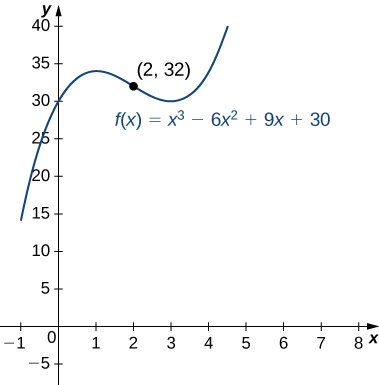
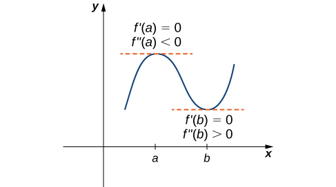
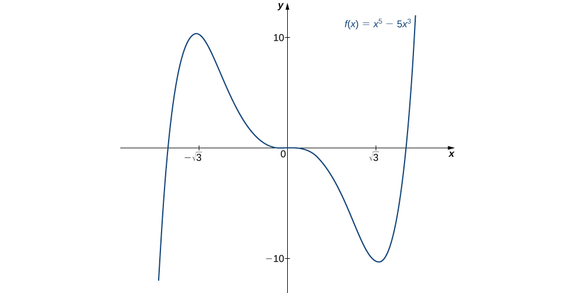
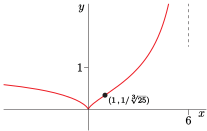
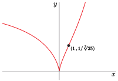

Definition 4.6.1.
Let \(f\) be a function that is differentiable over an open interval \(I.\) If \(f'\) is increasing over \(I,\) we say \(f\) is concave up over \(I.\) If \(f'\) is decreasing over \(I,\) we say \(f\) is concave down over \(I.\)
!["This figure is broken into four figures labeled a, b, c, and d. Figure a shows a function increasing convexly from (a, f(a)) to (b, f(b)). At two points the derivative is taken and both are increasing, but the one taken further to the right is increasing more. It is noted that f’ is increasing and f is concave up. Figure b shows a function increasing concavely from (a, f(a)) to (b, f(b)). At two points the derivative is taken and both are increasing, but the one taken further to the right is increasing less. It is noted that f’ is decreasing and f is concave down. Figure c shows a function decreasing concavely from (a, f(a)) to (b, f(b)). At two points the derivative is taken and both are decreasing, but the one taken further to the right is decreasing less. It is noted that f’ is increasing and f is concave up. Figure d shows a function decreasing convexly from (a, f(a)) to (b, f(b)). At two points the derivative is taken and both are decreasing, but the one taken further to the right is decreasing more. It is noted that f’ is decreasing and f is concave down."](external/ch4/CNX_Calc_Figure_04_05_010.jpg)
!["A sinusoidal function is shown that has been shifted into the first quadrant. The function starts decreasing, so f’ \lt 0 and f’’ \gt 0. The function reaches the local minimum and starts increasing, so f’ \gt 0 and f’’ \gt 0. It is noted that the slope is increasing for these two intervals. The function then reaches an inflection point (a, f(a)) and from here the slop is decreasing even though the function continues to increase, so f’ \gt 0 and f’’ \lt 0. The function reaches the maximum and then starts decreasing, so f’ \lt 0 and f’’ \lt 0."](external/ch4/CNX_Calc_Figure_04_05_004.jpg)
| Interval | Test Point | Sign of \(f''(x)=6x-12\) at Test Point | Conclusion |
|---|---|---|---|
| \((-\infty,2)\) | \(x=0\) | \(-\) | \(f\) is concave down |
| \((2,\infty)\) | \(x=3\) | \(+\) | \(f\) is concave up. |

| Sign of \(f'\) | Sign of \(f''\) | Is \(f\) increasing or decreasing? | Concavity |
|---|---|---|---|
| Positive | Positive | Increasing | Concave up |
| Positive | Negative | Increasing | Concave down |
| Negative | Positive | Decreasing | Concave up |
| Negative | Negative | Decreasing | Concave down |


| \(x\) | \(f''(x)\) | Conclusion |
|---|---|---|
| \(-\sqrt{3}\) | \(-30\sqrt{3}\) | Local maximum |
| \(0\) | \(0\) | Second derivative test is inconclusive |
| \(\sqrt{3}\) | \(30\sqrt{3}\) | Local minimum |

| \((-\infty,0)\) | 0 | (0,3) | 3 | \((3,\infty)\) | |
| \(f'(x)\) | negative | 0 | negative | 0 | positive |
| decreasing | horizontal tangent |
decreasing | minimum | increasing |

| [0,2) | 2 | \((2,\infty)\) | |
| \(f'(x)\) | negative | DNE | negative |
| decreasing | vertical asymptote |
decreasing |


| \((-\infty,0)\) | 0 | (0,6) | 6 | \((6,\infty)\) | |
| \(f'(x)\) | negative | DNE | positive | DNE | negative |
| decreasing | vertical tangents |
increasing | vertical asymptote |
decreasing |
| \((-\infty,1)\) | 1 | \((1,\infty)\) | |
| \(f''(x)\) | negative | 0 | positive |
| concave down | inflection point |
concave up |


